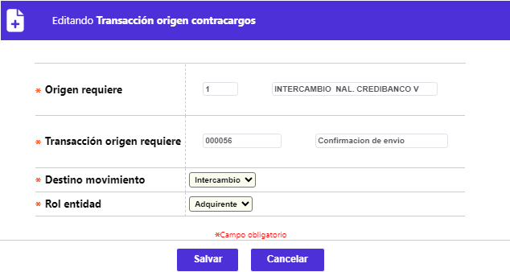

Origen de transacciones - Transacciones
A través de este formulario invocado desde el enlace Transacciones, contenido en el formulario orígen de transacciones se registra la codificación y descripción de las distintas transacciones válidas para cada uno de los orígenes, relacionando para cada una, en caso de aplicar, los costos asociados a la misma. El formulario contiene los enlaces: Motivos de devolución, Transacciones origen contracargos, Actualizar, Eliminar, Adicionar y Detalle.

El formulario cuenta con un filtro mediante el cual, se pueden hacer consultas selectivas, bien sea por el código de la transacción original o la descripción de la misma.

Adicionar: Al activar ese enlace se despliega el siguiente formulario, el cual se encuentra dividido en tres bloques de datos: Parámetros, Canje internacional y Validaciones.

Descripción de campos
|
Transacción |
Campo numérico de hasta 6 dígitos en el cual se registra el código que identifica la transacción original que se está parametrizando y para la que se definen las demás condiciones del presente formulario. |
|
Descripción |
En este campo alfanumérico de 30 caracteres, se registra la descripción o nombre asociada a cada transacción original. |
|
Plazo intercambio |
En este campo numérico de 2 dígitos, en el que se indica el plazo estándar fijado por el operador, para que la entidad genere la transacción de devolución automática por no haber recibido respuesta oportuna a la solicitud de documentos. Aplica cuando en parámetros operativos se haya definido en el campo Plazo intercambio la opción Transacción. |
|
Liquida comisión nacional |
Campo que posee lista de valores tipo combo, permite seleccionar entre Si o No, la transacción debe generar liquidación de comisión dentro del canje nacional. |
|
Plazo recibido |
Campo numérico de 2 dígitos, que aplica para aquellas transacciones relacionadas con la solicitud de documentos, y en el que se registra el plazo de que dispone la entidad para presentar o enviar la solicitud o reclamación a la entidad contraparte. |
|
Tipo de documento |
Campo que posee lista de valores tipo combo, de la cual se puede seleccionar entre: Transacción original, Transacción no original, Nota débito, Error de canje o Nota crédito, el tipo de documento que soporta la transacción. |
|
Liquida comisión internacional adquirente |
Campo que posee lista de valores tipo combo, de la cual se selecciona entre Si o No, la transacción debe generar liquidación de comisión dentro del canje internacional. |
|
Acción para compensación recibida |
Campo diseñado para uso futuro, que posee lista de valores de la que se puede seleccionar entre Suma o Resta la implicación que tiene cada transacción dentro del canje enviado.Campo diseñado para uso futuro, que posee lista de valores de la que se puede seleccionar entre Suma o Resta, la implicación que tiene cada transacción dentro del canje enviado. |
|
Naturaleza |
Campo obligatorio que posee lista de valores tipo combo con las opciones: No aplica, Débito o Crédito, para seleccionar la esencia de la transacción según corresponda. |
|
Concepto |
Campo con lista de valores adjunta, de la cual se puede seleccionar el concepto de la transacción, de acuerdo con la forma en que ésta afecta el saldo de la tarjeta. |
El segundo bloque de datos, Canje internacional contiene los siguientes campos:

Descripción de campos
|
Costo de servicio de la transacción |
Campo numérico de 14 enteros y dos decimales dentro del que se define el valor que cobra el compensador por cada transacción internacional que viaje tanto en el canje recibido como en el enviado. Esto significa, que al valor total de la compra se le aplica el porcentaje definido en este campo, y al resultado obtenido se le aplica el indicador liquidación costos trx determinado en Parámetros franquicia, generando así el valor correspondiente a los ingresos por proceso. |
|
Comisión proporcional para banco |
Campo numérico de 3 enteros y 2 decimales, dentro del que se define el valor porcentual a aplicar a la comisión sobre el monto de la transacción y destinado a la entidad emisora de la tarjeta. Esto es, al resultado calculado en el campo inmediatamente anterior, se aplica el valor definido en este para determinar los ingresos por servicio de red. |
El tercer bloque de datos se denomina Validaciones y contiene los siguientes campos:

Descripción de campos
|
Procedimiento |
Campo con lista de valores en el cual se selecciona el programa que se va a ejecutar, como parte del proceso de validaciones a las que será sometida la transacción original, y de cuyo resultado depende en últimas el destino de la misma. El sistema permite definir hasta 20 validadores para una transacción, los cuales serán ejecutados exactamente en el mismo orden en el que son ingresados en el formulario. |
|
Indicador |
Campo que posee lista de valores tipo combo, de la cual se selecciona entre: Ejecutar y No ejecutar, para indicarle al sistema si en el momento de validar la transacción original asociada al origen, se debe aplicar o no el validador. |
Actualizar: Al invocar ese enlace se despliega el siguiente formulario, en el cual el único campo no modificable es: Transacción.

Detalle: Al activar ese enlace se despliega el siguiente formulario, con los datos del registro y en el cual ninguno de sus campos es modificable:

Motivos de devolución: En este formulario se permite asociar a cada transacción, los diversos conceptos o motivos que pueden argumentarse dentro de los archivos en que viaje la información de una transacción en proceso de intercambio o disputa. Estos motivos deben corresponder con los estándares definidos por las franquicias. El formulario contiene los enlaces: Actualizar, Eliminar y Adicionar. En este formulario se registran los diferentes validadores que aplican previamente a las transacciones de tarjetas que pertenecen a productos asociados a convenios. Los validadores aquí parametrizados aplican exclusivamente para el origen y transacción original seleccionados por el usuario al momento de invocar este formulario.correspondientes.

Adicionar: Al activar ese enlace se despliega un formulario.

Descripción de campos
|
Motivo |
En este campo numérico de 3 dígitos, obligatorio, se registra el código que identifica el motivo por el cual una transacción puede ser devuelta o presentada a reclamación (intercambio) entre las entidades adquirente y emisora. |
|
Descripción |
Campo alfanumérico, obligatorio, que contiene el nombre o breve descriptivo del motivo o concepto asociado al código anterior. |
Actualizar: Al activar ese enlace se despliega el siguiente formulario, en el cual el único campo modificable es la Descripción:

Transacciones origen contracargos : en este formulario se registra la información asociada con el proceso de contracargos, y en él se parametrizan las transacciones que es posible generar acorde con cada origen de movimiento y considerando el rol desempeñado por la entidad bien sea como emisor o adquirente. El formulario contiene los enlaces: Actualizar, Eliminar y Adicionar.

Adicionar: Al activar ese enlace se despliega el siguiente formulario:

Descripción de campos
|
Origen requiere |
Este campo obligatorio posee lista de valores de la cual debe seleccionarse el origen o fuente de movimiento a parametrizar. |
|
Transaccion Origen requiere |
Campo obligatorio con lista de valores que permite asociarle a cada origen o fuente, las diferentes transacciones que pueden ser invocadas o argumentadas, de acuerdo con la etapa o estado del proceso de contracargo. |
|
Destino movimiento |
Campo obligatorio que posee lista de valores tipo combo, de la que debe seleccionarse entre: Intercambio, Diario o Ambos, el destino que se le debe dar a las transacciones. |
|
Rol entidad |
Campo obligatorio que posee lista de valores tipo combo, de la que debe seleccionarse entre: Adquirente o Emisor, el rol o papel desempeñado por la entidad respecto de cada transacción y origen de la misma, el cual varía dependiendo de la etapa o fase en que se encuentre el proceso de contracargo. |
Actualizar: Al activar ese enlace se despliega el siguiente formulario, en el cual los campos modificables son: Destino movimiento y Rol entidad.
